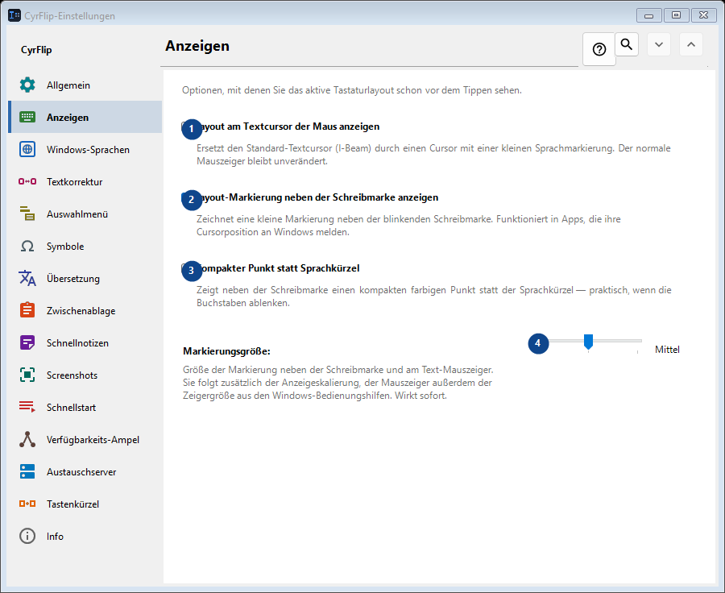
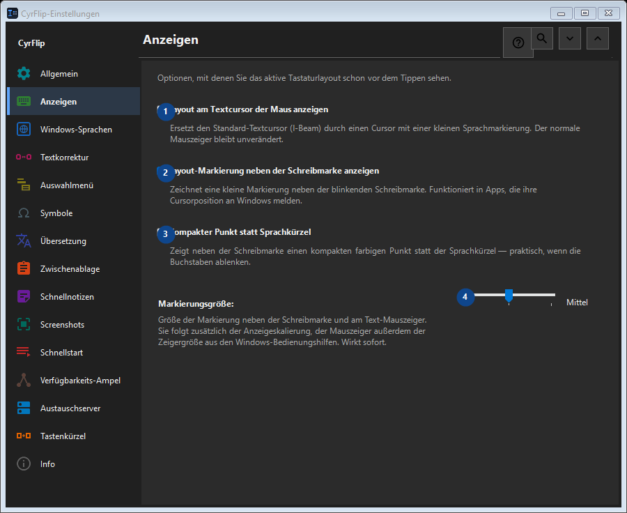

Anzeigen
Zweck
Optionen, mit denen Sie das aktive Tastaturlayout schon vor dem Tippen sehen.


Reihenfolge
Einstellungen gelten sofort. Eine feste Reihenfolge ist nicht nötig; nutzen Sie die Gruppen unten.
Elemente
1. Layout am Textcursor der Maus anzeigen
Ersetzt den Standard-Textcursor (I-Beam) durch einen Cursor mit einer kleinen Sprachmarkierung. Der normale Mauszeiger bleibt unverändert.
Ihre Tastenkürzel2. Layout-Markierung neben der Schreibmarke anzeigen
Zeichnet eine kleine Markierung neben der blinkenden Schreibmarke. Funktioniert in Apps, die ihre Cursorposition an Windows melden.
Ihre Tastenkürzel3. Kompakter Punkt statt Sprachkürzel
Zeigt neben der Schreibmarke einen kompakten farbigen Punkt statt der Sprachkürzel — praktisch, wenn die Buchstaben ablenken.
Ihre Tastenkürzel4. Markierungsgröße
Wählen Sie den Wert zur benachbarten Beschriftung oder geben Sie ihn ein. Prüfen Sie ihn vor dem Fortfahren.
Ihre Tastenkürzel